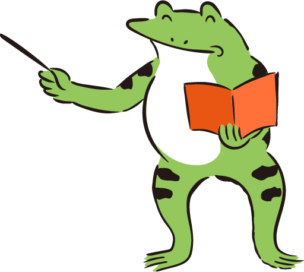

７月２８日は土用丑の日。 その昔日本では、土用丑の日あたりは 季節の変わり目とされていて、 この時期に体調を崩す人がとても多かったそうです。
そのために栄養価の高い食べ物を食べて、 気候の変化に備える習慣があったのですね。
特に土用丑の日は、「うし」にちなんで 「う」のつく食べ物を摂ると無病息災、と 言われていました。
●牛 ●ウナギ ●梅干し ●瓜 ●うどん などなど。
この時期の魚は脂も少なくなるので、なかでも 「ウナギ」は特に栄養価の高い貴重な食材だったのです。
夏の暑いさなか、 土用丑の日にウナギを食べる習慣が根付いたのは江戸時代の頃。 エレキテルなどで有名な蘭学者「平賀源内」が広め、 以下の文は日本最初のコピーライティングとされています。
『土用の丑の日うなぎの日
食すれば夏負けすることなし』
これを店先に出したウナギ屋は、その後大繁盛したそうです。
きっとウナギを食べた人達がよりパワフルに生活できたのでしょうね。
食べ物の少ない時代でも元気に生活することを求めた 先人達の知恵と言えるでしょう。
さあ、「う」のつく食べ物で精をつけ、 夏バテを回避しましょう！
うな重弁当 ご予約受付中！
